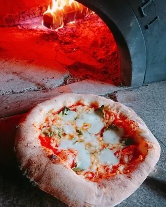
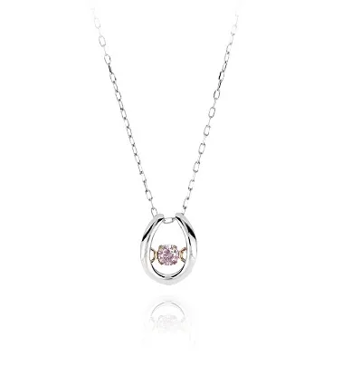
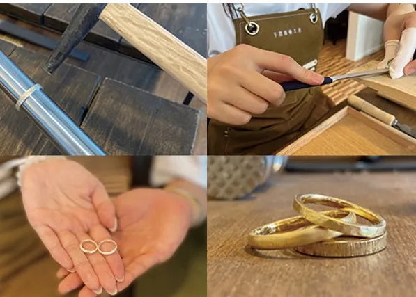
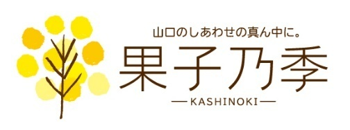
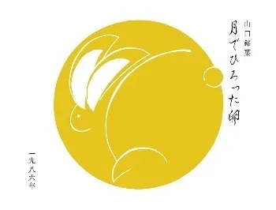

BAKE SHOPnanaseto
笠戸島にある小さな焼き菓子店です。クッキーやパウンドケーキ、スコーンなどの焼き菓子、コーヒーや自家製シロップのドリンクなどもテイクアウトできますのでドライブがてらぜひ笠戸島へ！
Gift焼き菓子詰め合わせ1つお店で人気の恐竜型スペキュロス（クッキー）やパウンドケーキなどを詰め合わせました。
Instagram
2027年1月10日（日）スターピアくだまつ Ｋビジョンホール
昭和44年 11月3日 制定
わたくしたち 下松市民は
英知と 友愛と 勇気をもって
令和9年 下松市二十歳のつどい
2027年1月10日（日）
記念式典 10:30〜
アトラクション 11:00〜
スターピアくだまつ
Ｋビジョンホール
主催：下松市・下松市教育委員会
主管：令和9年下松市二十歳のつどい実行委員会
10:30 —
11:00 —
会場：スターピアくだまつ Ｋビジョンホール
お楽しみ抽選会の景品をご提供いただきました
抽選会景品として地元の事業者の方々に協賛品の募集を行ったところ、多数の申し込みがありました。
「ふるさと下松で育った皆さんをお祝いしたい」という温かいお気持ちでご協力いただいた事業者の方々をご紹介します。
笠戸島にある小さな焼き菓子店です。クッキーやパウンドケーキ、スコーンなどの焼き菓子、コーヒーや自家製シロップのドリンクなどもテイクアウトできますのでドライブがてらぜひ笠戸島へ！
昭和27年創業の中華そば専門店、星降るまち「下松」で伝統の味を守り続けています。牛骨ならではの甘い香りとコク、まろやかなしょうゆ味が特徴のスープです。

令和4年7月に2階を全面改装し、日帰りバケーションを満喫できる施設に生まれ変わりました。従来の温泉に加えワーケーションとしても利用可能なスペースを設置し、より多くの皆様に喜んで頂いております。大人からお子様まで楽しめる施設となっておりますので、皆様のご来館をお待ちしております。

笠戸湾を一望できる高台にあるリラックスできる温泉宿「国民宿舎大城」。全室オーシャンビューで、モダンテイストの落ち着きのあるお部屋、まるで海とつながっているような笠戸湾の眺望を満喫できる天然温泉「潮騒の湯」、「笠戸ひらめ」や「笠戸のとらふぐ」など地元食材を生かした美味なるお料理でおもてなしいたします。

株式会社徳山コーヒーボーイです。「コーヒーの幸せをサポートする」をテーマに、さまざまな「コーヒーのある風景」を皆さまにより楽しんでいただけるように日々、努めています。

北海道産小麦を使用し、石窯でもちもちに焼き上げる本格ナポリピッツァや、自家製生パスタを使用した種類豊富なパスタメニュー。Aランクさが牛の炭火焼きなど、バラエティーに富んだ商品構成でご家族や、女子会、デートなど様々なシーンでたくさんのお客様にご利用いただいております。二十歳のお祝いをぜひロゼッタ下松で！！皆様のご来店、お待ちしております。

サンリブ下松店
ジュエルセブンは下松市内にサンリブ下松店と美里町にブライダルジュエリー専門店の2店舗がございます。ジュエリーは想い出として残したり、日々の生活にちょっとした華やかさをプラスしたりします。ピアスなどのアクセサリーから大切な結婚指輪まで、ジュエルセブンにぜひお越しくださいませ。

ジュエルセブンは下松市内にサンリブ下松店と美里町にブライダルジュエリー専門店の2店舗がございます。ジュエリーは想い出として残したり、日々の生活にちょっとした華やかさをプラスしたりします。ピアスなどのアクセサリーから大切な結婚指輪まで、ジュエルセブンにぜひお越しくださいませ。


果子乃季では「月でひろった卵」をはじめとしたさまざまな和洋菓子を製造・販売しております。下松店には、他の果子乃季にはない限定のケーキが多数あり、店内のカフェスペースでお召し上がりいただけますよ。おやつ、プレゼント、山口県のお土産として、ぜひご利用ください。

ふんわり、ふわふわのカステラで、とろっととろけるようなクリームを包んだ山口銘菓。1986年の発売以来、山口県の皆様に愛されてきました。山口県産の牛乳、たまご、そして国産和栗と、安心・安全にもこだわりました。※画像はイメージです。ぜひ、お友達やご家族と行ってみてね！
未記入令和9年の内容が決まり次第、掲載します。
未記入令和9年の内容が決まり次第、掲載します。
二十歳、おめでとう！
二十歳を迎えた皆さん、おめでとうございます！
同じ下松で育った仲間と、こうしてまた顔を合わせられることを、実行委員一同とても嬉しく思っています。
今日が、これまで支えてくれた人たちへの感謝と、これからの自分への期待を感じられる一日になりますように。皆さんの新しい一歩を、心から応援しています。
令和9年 下松市二十歳のつどい実行委員会 一同